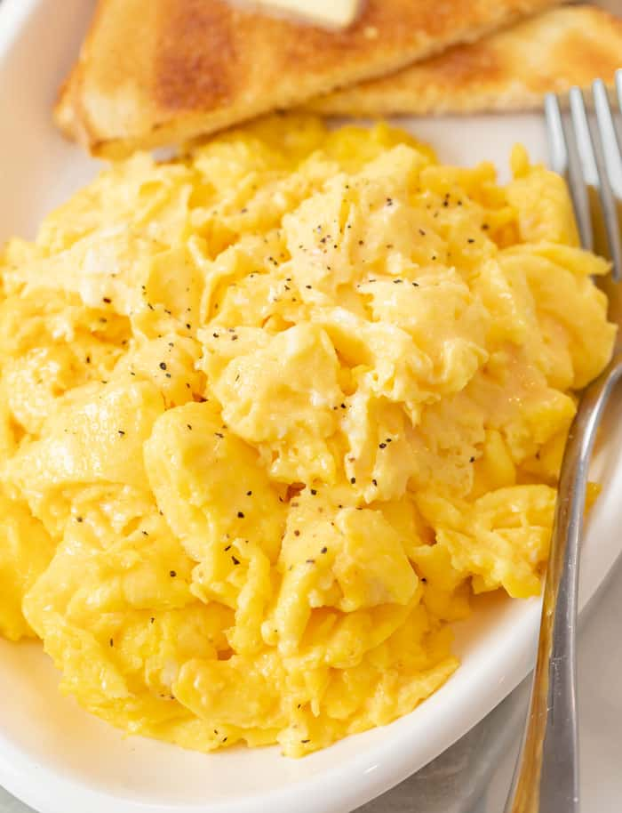

Scrambled Eggs

Description
The right way to scramble eggs.
There is more to just mixing eggs and cooking! This
will make a believer out of you.
Ingredients
- 2 eggs
- 1 teaspoon mayonnaise or salad dressing
- 1 teaspoon water (Optional)
- 1 teaspoon margarine or butter
- 1 pinch salt and pepper to taste
Steps
- In a cup or small bowl, whisk together the eggs,
mayonnaise and water using a fork.
- Melt margarine in a skillet over low heat.
- Pour in the eggs, and stir constantly as they cook.
- Remove the eggs to a plate when they are set, but
still moist.
- Do not over cook.
- Never add salt or pepper until eggs are on plate,
but these are also good without.